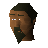

Kebab seller

| Config name | kebab_seller |
| NPC id | 543 |
| Combat level | hidden |
| Options | Talk-to |
| Wander range | 2 tiles from spawn |
| Area folder | area_alkharid |
| Defined in | scripts/areas/area_alkharid/configs/alkharid.npc |
Kebab seller
Kebabs are full of meaty goodness!
Show all 1 spawn on the world map → Open in knowledge graph →
Locations
| Area | Coordinates | Level | Count | Map |
|---|---|---|---|---|
| Toll Gate | 3272, 3182 | 0 | 1 | view |
Dialogue
Kebab sellerI've got a little problem for you to solve.
Kebab sellerWould you like to buy a nice kebab? Only one gold.
PlayerI think I'll give it a miss.
PlayerYes please.
PlayerOops, I forgot to bring any money with me.
Kebab sellerCome back when you have some.
PlayerI'm in search of a man named Avan Fitzharmon.
Kebab sellerCan't say as I've seen him... I'm sure if he's been to Al Kharid recently someone around here will have though.
Referenced in scripts
scripts/areas/area_alkharid/scripts/kebab_seller.rs2